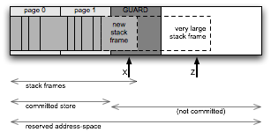

This wiki article contains incomplete and informal notes about the MPS, the precursor to more formal documentation. Not confidential. Readership: MPS users and developers.
This article describes:
The C-Stack is the control stack used by the C language runtime environment, for return addresses, local variables, etc. Each thread of execution has its own C-Stack.
Common operating systems and processors have special mechanisms to:
(This support allows function call code to simply assume there is sufficient stack space, without time-consuming bounds checking).
These mechanisms are important for the MPS and for MPS clients.
In the rest of this article, "the stack" means "the C-Stack".
Common operating systems reserve a (large) amount of address-space for the C-Stack when the stack is created. The amount of address-space reserved for a new thread's C-Stack may not be the same as for the 'main thread' in the process. The initial amount may be tunable via operating system and/or compiler options, but is usually fixed once the stack has been created.
Storage is usually committed dynamically (as required by stack growth), using a "guard page" mechanism. (Figure 1).
Figure 1: Guard page for dynamic C-Stack growth

The operating system protects the virtual-memory page beyond the end of the stack. This is called a "guard page".
When a new stack frame strays into the guard page, and a location in it is accessed (see "X" in Figure 1), a "guard page protection fault" occurs. The operating system and/or C language runtime detects this fault and:
This mechanism allows stack memory to grow dynamically as needed (but not shrink) with no special action by the compiler or programmer, as long as stack frames are always smaller than the guard page.
If the guard page is only 4K bytes, it is easy for a C function to exceed this with a local array variable:
void myfunc(void) { char myarray[5000]; myarray[0] = myarray[4999] = 0; }
If a new stack frame is so large that part of it extends beyond the guard page, and a location in that part is accessed (see "Z" in Figure 1) it causes a protection fault. This fault is not in the guard page, so the operating system will not interpret this as normal stack growth, and will not enlarge the stack. The fault will be treated as a "general protection fault" (also called "segmentation violation"), and the process may be terminated.
To prevent this, a "stack probe" must be performed, forcing the stack to grow enough to hold the new large stack frame.
Note: Typically the guard page is only 4K bytes long. I don't know why it should not extend all the way to the end of the address-space reserved for the stack. Perhaps it does on some systems, perhaps for the main thread only: from the GCC 4.1.1 manual, section 3.18:
-fstack-check: Generate code to verify that you do not go beyond the boundary of the stack. You should specify this flag if you are running in an environment with multiple threads, but only rarely need to specify it in a single-threaded environment since stack overflow is automatically detected on nearly all systems if there is only one stack.
The phrase "Generate code" seems to refer to stack probe code. See STACK_CHECK_PROBE_INTERVAL in GCC Internals: Stack Checking.
A "stack probe" accesses each page of the new large stack frame in sequence, starting at the first (guarded) page, and accessing locations one page apart until the last page is accessed. Each access generates a guard page protection fault, which causes the stack to extend and the guard page to advance, one page at a time.
Stack probe code is a simple for-loop, incrementing a pointer by the page-size each time and making one access, until the last page is accessed.
Most C compilers detect functions with large stack frames and automatically insert suitable stack probe code in the function prologue. This stack probe code may be inline, or in a runtime library.
For the MSVC 6.0 compiler, the /Gs option controls how large a stack frame must be for the compiler to generate stack probe code. For GCC, see -fstack-check and the internal STACK_CHECK_PROBE_INTERVAL macro.
MPS code uses this compiler-generated stack-probe, controlled by command-line flags to the compiler when the MPS is compiled. See build notes for recent changes on Windows and possibly other platforms.
Application code can perform a 'manual' stack probe. This may be done to ensure that some critical region of code is not interrupted by a stack fault.
The MPS performs a manual stack probe on some platforms. See MPS stack probe ↓ below.
Briefly: when there is no more room for the stack to grow, because there is something else in the way. In other words, the reserved stack space has been exhausted. Most runtimes give up at this point with a "hard stack fault".
But some runtimes simply find some more free address-space and start a supplementary stack. So the stack is broken in several parts. To do this, the runtime must catch hard stack faults -- see "Catching exceptions" below. Dylan may do this.
Briefly: all these faults -- guard page protection fault, hard stack fault, etc -- may need to be passed through by any intermediate fault handlers you install. That includes the handler that MPS installs to catch read- and write-barrier hits, when the client calls mps_tramp().
Alternatively, some OSs let application code make the stack-grow call. The application can install a handler that traps and deals with a guard page protection fault, and/or a hard page fault.
Briefly: there are various reasons why having a stack fault -- even a guard page protection fault -- inside the MPS might be bad. If you fault-out in the middle of an MPS operation, there are various things that can go wrong:
Object pointers may be in an inconsistent state. This could be confusing if the fault-handler -- especially an application fault-handler (eg. in Dylan) -- is expecting to look at objects as it handles the fault.
Memory read- and/or write-barriers may be in place where they should not be, or not in place where they should be, because the MPS is adjusting them during its collection work.
Barrier hits generated by the stack fault handler may attempt a re-entrant call into the MPS, which will fail to do the right thing and/or crash.
Of course, if the stack fault handler simply increases the available stack space and continues the thread, this should be invisible to the MPS.
To help prevent problems, the MPS may do a manual stack probe
to check that there is sufficient stack space
before beginning each MPS operation (each one that calls
arenaEnterLock at least).
If the space is insufficient
this probe will generate a stack fault before the MPS
operation begins.
The MPS is not deeply recursive. One conservative estimate of the stack space that should be available when calling the MPS is 2048 bytes (on Windows with x86 instruction set).
Note: the stack probe is currently only implemented for
the i3 (Intel) architecture when building using mv (Visual
Studio). See
span.c and
spi3.c.
On some OSs, the default per-thread stack size is very small. Recommendation: it is wise to check the default, and increase it if necessary.
[Note: if THREAD_SINGLE and
PROTECTION_NONE are defined, the
stack probe is skipped. This is probably wrong.
RHSK 2006-07-25, reading //info.ravenbrook.com/project/mps/master/code/global.c#18.]
2006-06-25 RHSK Created. 2006-06-25 RHSK Stack faults. 2006-08-15 RHSK More on Stack faults. 2006-12-29 RHSK More on Stack faults.
This document is copyright © 2006 Ravenbrook Limited. All rights reserved. This is an open source license. Contact Ravenbrook for commercial licensing options.
Redistribution and use in source and binary forms, with or without modification, are permitted provided that the following conditions are met:
This software is provided by the copyright holders and contributors "as is" and any express or implied warranties, including, but not limited to, the implied warranties of merchantability, fitness for a particular purpose, or non-infringement, are disclaimed. In no event shall the copyright holders and contributors be liable for any direct, indirect, incidental, special, exemplary, or consequential damages (including, but not limited to, procurement of substitute goods or services; loss of use, data, or profits; or business interruption) however caused and on any theory of liability, whether in contract, strict liability, or tort (including negligence or otherwise) arising in any way out of the use of this software, even if advised of the possibility of such damage.